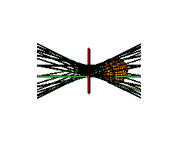

Common Transversals and Tangents
Frank SottileUniversity of Masssachusetts, Amherst
Symbolic Computational Algebra 2002
University of Western Ontario
Thank you for your attention

Common Transversals and TangentsFrank SottileUniversity of Masssachusetts, Amherst Symbolic Computational Algebra 2002 University of Western Ontario Thank you for your attention |
 |
|
18 | |